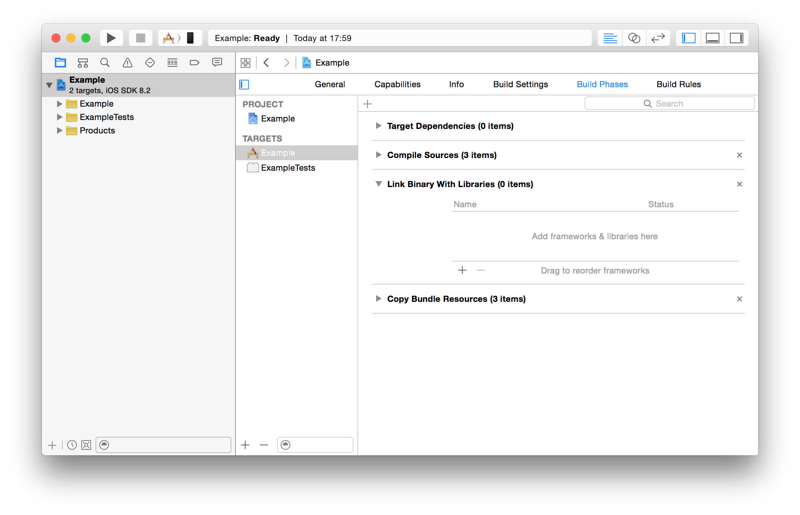
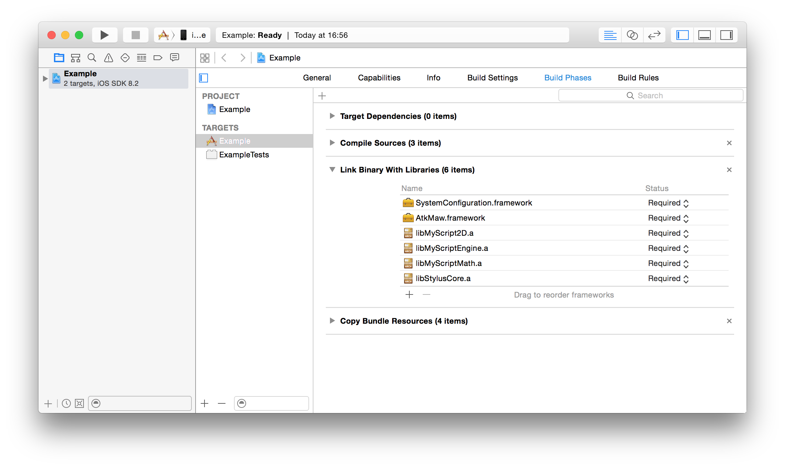
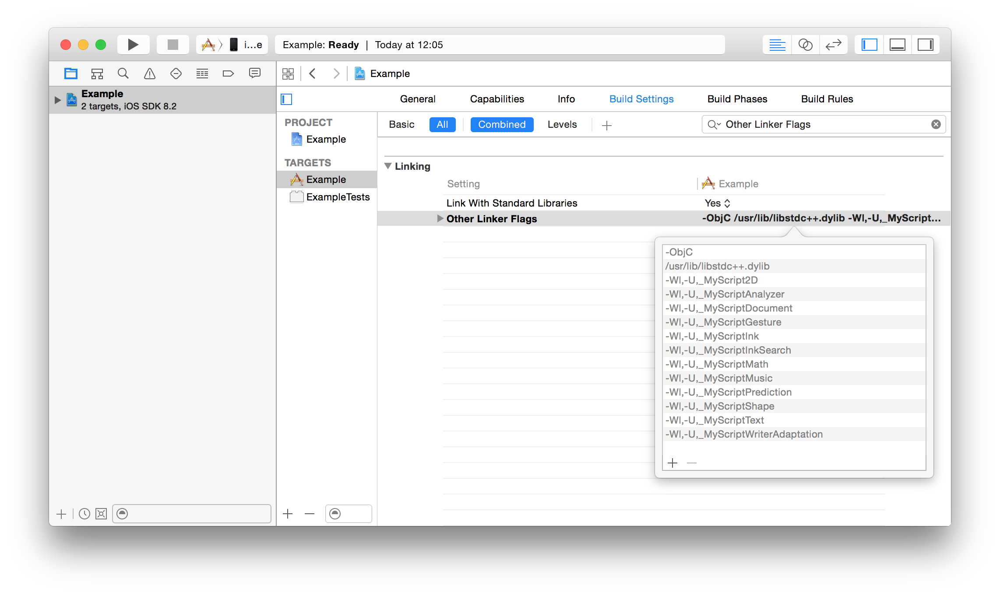
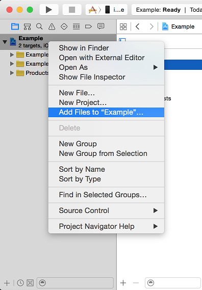
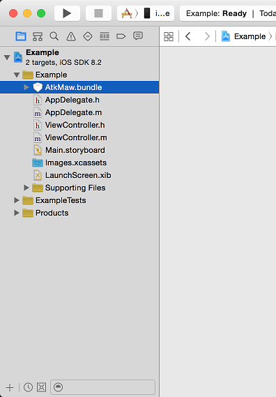

To install and integrate the Math Widget on iOS, you must be using the latest version of Xcode and iOS SDK. Minimum deployment target is 7.0.
The Math Widget for iOS is a framework that you add to your Xcode project.



The Math Widget requires some specific resources like images and fonts. To link these resources, add AtkMaw.bundle to your project.
 
To use the Math Widget in your app, add the following import instructions:
#import <AtkMaw/MAWMathWidget.h>You can instantiate a MAWMathViewController with a few lines:
// Create the MathWidget View Controller
MAWMathViewController *mathViewController = [[MAWMathViewController alloc] init];
// Recognition resources
NSArray *resources = @[@"math-ak.res", @"math-grm-maw.res"];
// Certificate
NSData *certificate = [NSData dataWithBytes:myCertificate.bytes length:myCertificate.length];
// Configure the MathWidget View Controller with the recogntion resources and the certificate
[mathViewController configureWithResources:resources
certificate:certificate];You can then use the MAWMathViewController as any UIViewController.